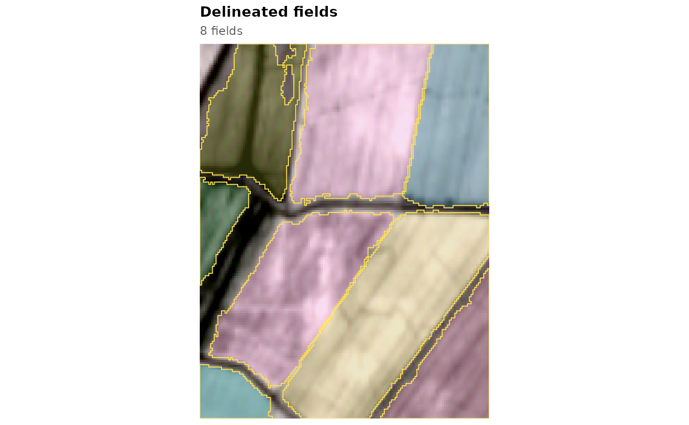

Runs the complete workflow on a stack: TBC edge and cropland maps from a model, optional fusion with deep-model probabilities, field objects and polygons.
Usage
fb_fields(
stack,
model = fb_model_pretrained("general"),
dl = NULL,
fusion = if (is.null(dl)) NULL else fb_model_pretrained("general", "fusion"),
thresholds = NULL,
polygons = TRUE,
threads = 1L
)Arguments
- stack
An
fb_stack.- model
An
fb_model(default: the pretrained"general"model).- dl
Optional deep-model probabilities (
background,field,boundary), for example fromfb_prue_predict(), on the grid ofstack.- fusion
An
fb_fusionmodel, used whendlis given (default: the pretrained"general"fusion).- thresholds
Delineation thresholds; by default those stored with the model (or the fusion, when
dlis given).- polygons
Return polygons as well as rasters.
- threads
Number of threads for the cropland model.
Value
A list with maps (edge and cropland), fields (field objects) and, if
requested, polygons (sf).
Examples
s <- fb_example_stack("moghan")
res <- fb_fields(s)
res$polygons
#> Simple feature collection with 8 features and 6 fields
#> Geometry type: POLYGON
#> Dimension: XY
#> Bounding box: xmin: 47.86071 ymin: 39.58569 xmax: 47.86936 ymax: 39.59434
#> Geodetic CRS: WGS 84
#> field_id area_ha perimeter_m compactness mean_edge mean_cropland
#> 1 2 6.948613 1882.0813 0.2465081 0.4037147 0.8235900
#> 2 3 1.965498 845.6585 0.3453763 0.4028970 0.9277644
#> 3 4 1.962823 656.3192 0.5726125 0.2512161 0.9558568
#> 4 5 10.601694 1961.1961 0.3463723 0.5698996 0.8946704
#> 5 8 14.485560 2137.9932 0.3982287 0.2968559 0.9658889
#> 6 9 11.581050 1768.5929 0.4652668 0.4338092 0.8628373
#> 7 10 5.306530 1334.4651 0.3744605 0.4640078 0.8620378
#> 8 11 7.527694 1322.1845 0.5411126 0.2567450 0.9713678
#> geometry
#> 1 POLYGON ((47.86184 39.59434...
#> 2 POLYGON ((47.86071 39.59126...
#> 3 POLYGON ((47.86071 39.58693...
#> 4 POLYGON ((47.86503 39.5905,...
#> 5 POLYGON ((47.8672 39.5905, ...
#> 6 POLYGON ((47.86417 39.59434...
#> 7 POLYGON ((47.8693 39.58915,...
#> 8 POLYGON ((47.86768 39.59434...
fb_plot_fields(res$fields, s)
